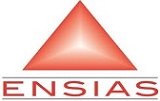

-

-

- 
About
Le forum thématique mensuel
«Digital Smart Systems Førum»
est une initiative visant à bâtir un véritable espace d’échange scientifique, réunissant universitaires, industriels et acteurs publics dans le but de débattre autour de questions centrales à la transformation digitale, aux Systèmes Smart et aux Technologies de l’Information.
Son esprit réside dans une volonté de sortir des sentiers battus des conférences académiques classiques et de permettre l’expression de points de vue, d’analyses et d’opinions diverses.
Plusieurs objectifs peuvent être atteints à travers de tels échanges : Promotion et diffusion de l’Innovation, Dissémination des meilleures pratiques, Identification d’axes de R&D communs, Gains en visibilité nationale et internationale et Constitution d’une force d’action et de proposition incontournable dans notre champ de spécialité.
Location
ENSIAS, Avenue Mohamed Ben Abdellah Regragui. Rabat, morocco
Speakers
-
Ouverture officielle du Forum et mots de bienvenue
Pr. Bouchaïb BOUNABAT
Directeur du « Rabat IT Center » de l’UM5-R -
« La stratégie de l'UE sur l'Intelligence Artificielle : gouvernance et éthique pour construire l'Europe Digitale à l'horizon 2030 »
Pr. Gianluca MISURACA
Senior Scientist at the European Commission's Joint Research Centre, Institute for Prospective Technological Studies (JRC-IPTS). Seville, Spain -
« Les données à l'ère du Machine et Deep Learning »
Pr. Dalila CHIADMI
Professeur EMI. Responsable de l’équipe de Recherche Systèmes Informatiques et Productique (SIP), Rabat-IT Center -
« Artificial Intelligence and Ethics : A Constraint Programming Vision »
Pr. Imade BENELALLAM
Professeur INSEA. Directeur du Laboratoire de Recherche en Systèmes d'Information, Systèmes Intelligents et Modélisation Mathématique (SI2M). Laboratoire associé au Rabat IT Center -
« Analyses Prédictive, IA, Data, IoT, BlockChain. Piliers de l'Entreprise Cognitive »
Pr. Salah BAINA
Professeur ENSIAS. Responsable de l’équipe de Recherche (ALQALSADI), Laboratoire ADMIR, Rabat-IT Center -
« Perspectives et scénarios métiers de transformation Digitale à travers le Big Data, l’IA et l’analytique »
Pr. Anys BOUKLI
Founder & CEO at Digital Partners SA. Board Advisor Innovation Expert at European Union -
« L’Intelligence Artificielle : Quelles applications concrètes ?»
M. Rachid BAARABI
Administrateur AUSIM (Association des Utilisateurs des Systèmes d’Information au Maroc). DSI, Assurances ELYAZIDI -
« Smart Mobile AI applications for Development »
Pr. Azzedine EL HASSOUNY
Professeur ENSIAS. Equipe Information Retrieval and Data Analytics (IRDA), Laboratoire ADMIR, Rabat-IT Center -
« Montage d'un socle technologique et de data commun pour encourager des projets collaboratifs basé sur l'intelligence artificielle au service du citoyen »
Pr. Zouheir LAKHDISSI
Entrepreneur digital, consultant et expert international dans le domaine de l'innovation digitale (World Summit Awards, Khalifa fund, GIST program) -
Échanges avec le public autour de l’AI4D en tant que plateforme de l’Innovation et de la création de Startups
Schedule
| Time | Speaker | Description |
|---|---|---|
| 9h00-9h30 | Pr. Bouchaïb BOUNABAT | Ouverture officielle du Forum et mots de bienvenue: Présentation du programme et des Panels |
| IA4D : Défis et Stratégies pour le développement | Séance 1 | - |
| 09:35 - 10:15 | Pr. Gianluca MISURACA | « La stratégie de l'UE sur l'Intelligence Artificielle : gouvernance et éthique pour construire l'Europe Digitale à l'horizon 2030 »: |
| Pause-café (20’) | - | |
| 10:35 - 10:55 | Pr. Dalila CHIADMI | « Les données à l'ère du Machine et Deep Learning »: |
| 11:00 - 11:20 | Pr. Imade BENELALLAM | « Artificial Intelligence and Ethics : A Constraint Programming Vision »: |
| 11:25 - 11:45 | Pr. Salah BAINA | « Analyses Prédictive, IA, Data, IoT, BlockChain. Piliers de l'Entreprise Cognitive »: |
| 11:50 - 12:20 | Questions/Réponses | - |
| Déjeuner | - | |
| IA4D – Impact et Applications pratiques | Séance 2 : | - |
| 14:30 - 15:10 | Pr. Anys BOUKLI | « Perspectives et scénarios métiers de transformation Digitale à travers le Big Data, l’IA et l’analytique »: |
| 15:15 - 15:45 | M. Rachid BAARABI | « L’Intelligence Artificielle : Quelles applications concrètes ?»: |
| 16:05 - 16:25 | Pr. Azzedine EL HASSOUNY | « Smart Mobile AI applications for Development »: |
| 16:30 - 16:50 | Pr. Zouheir LAKHDISSI | « Montage d'un socle technologique et de data commun pour encourager des projets collaboratifs basé sur l'intelligence artificielle au service du citoyen »: |
| Débat ouvert du Forum | - | |
| 16:30 - 16:50 | Échanges avec le public autour de l’AI4D en tant que plateforme de l’Innovation et de la création de Startups: |
Organizing Committee
Bouchaib BOUNABAT, ENSIAS, Rabat IT Center, University Mohammed V in Rabat
Mahmoud EL HAMLAOUI, ENSIAS, Rabat IT Center, University Mohammed V in Rabat